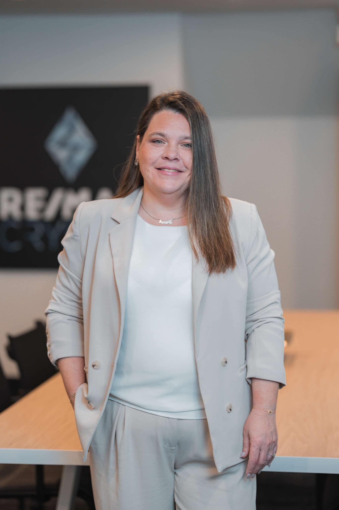
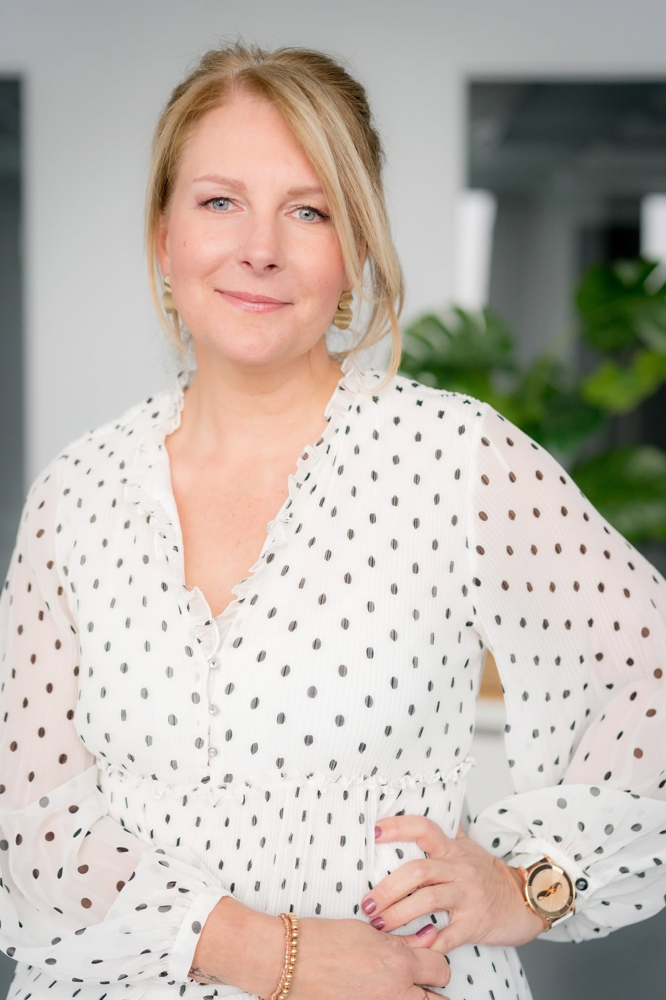

Catherine Marleau
Courtier immobilier résidentiel
14 ans de courtage
Voir sa page →Christine Depatie
Courtier immobilier résidentiel
5 ans de courtage
Voir sa page →Kim&Co | Courtiers Immobiliers
Courtier immobilier résidentiel
9 ans de courtage
Voir sa page →
Maxime Beaulac
Courtier immobilier résidentiel et commercial
10 ans de courtage
Voir sa page →
Sara Auclair
Courtier immobilier résidentiel et commercial
16 ans de courtage
Voir sa page →
Steeve Landry Courtier Immobilier Résidentiel & Commercial
Courtier immobilier résidentiel et commercial
2 ans de courtage
Voir sa page →Aucune page de courtier pour cette ville pour l'instant. Contactez l'agence : on vous jumelle avec le bon courtier.